GenomeDISCO | Genomewide report
Report generated on Tue May 30 00:53:26 2017. Code: http://github.com/kundajelab/genomedisco. Contact: Oana Ursu oursu@stanford.edu
sample2 vs sample3
Reproducibility analysis
What is GenomeDISCO reproducibility? |
GenomeDISCO (DIfferences between Smoothed COntact maps) computes reproducibility by comparing 2 contact maps at increasing levels of smoothing. The smoothing is done using random walks on graphs. For each dataset, we run random walks of increasing length, and ask what is the probability that we reach node j starting at node i, given a random walk through the network of t steps, or iterations. The key idea is that if 2 nodes are in contact, then there should be many high-confidence paths connecting them through the network, even if perhaps the direct edge between them was undersampled. Short random walks provide information about the local network structures, such as loop cliques and subdomains, whereas longer random walks shift the focus toward global structures such as compartments. For each random walk iteration we compare the 2 smoothed contact maps, obtaining an L1 difference in smoothed contact maps.
In the end, we integrate information across all random walks by computing the area under the curve of L1 differences vs random walk iterations (see difference plot below), resulting in a dissimilarity score between the 2 contact maps of interest. We transform this dissimilarity into a reproducibility score using the formula "Reproducibility = 1-d". This yields a reproducibility score between -1 and 1, with higher values indicating similarity (in practice, the range of scores is [0.4,1]).
GenomeDISCO runs on each chromosome separately. The genomewide score reported below is the average across all chromosomes. Higher scores are better.
Your scores
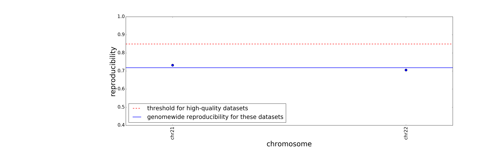
Reproducibility (genomewide) = 0.719
These datasets are less reproducible than our empirically defined threshold. This could be due to low sequencing depth, differences in distance dependence curves, noise. Please be cautious with these datasets.
Analysis by chromosome
The difference plot |
shows the L1 difference (normalized to the number of nodes) as a function of random walk iteration.
The distance dependence plot |
shows the probability of contact as a function of linear genomic distance. If 2 datasets have very difference distance dependence curves, their reproducibility will be lower than if they have similar curves.
The remaining columns |
below show the contact maps after smoothing with random walks. The upper triangular part plotted in red is sample2, while the blue is sample3. The colorbar shows red values as positive and blue values as negative purely for visualization purposes (in reality all values are positive).
| |
seqdepth |
reproducibility |
difference plot |
distance dependence |
Random walk iteration 3 |
Random walk iteration 4 |
Random walk iteration 5 |
Random walk iteration 6 |
Random walk iteration 7 |
| chr21 |
sample2: 1.49 M
sample3: 1.16 M |
0.732 |
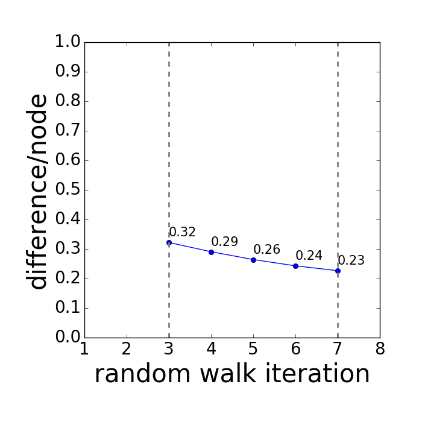 |
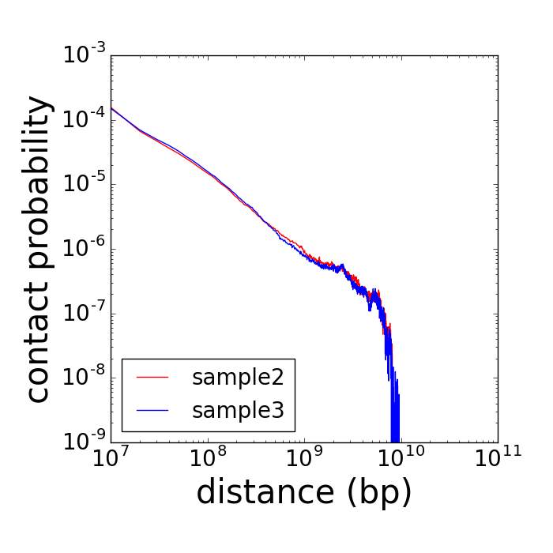 |
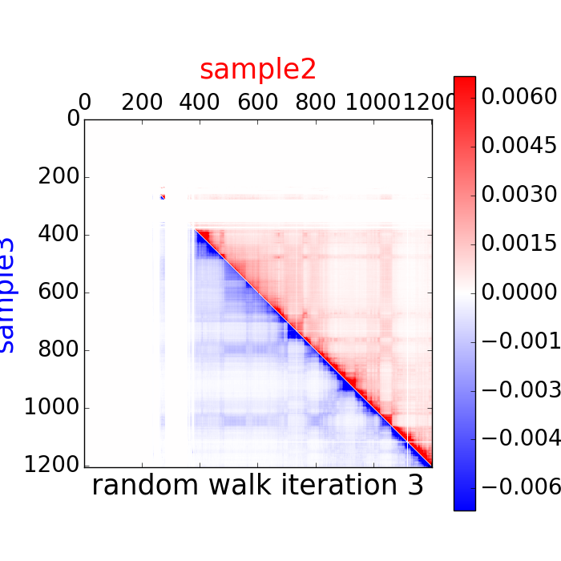 |
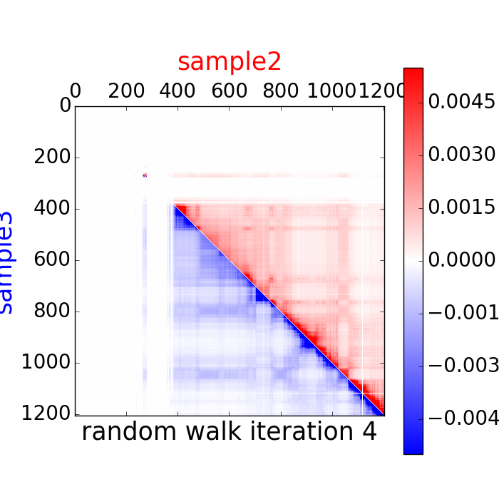 |
 |
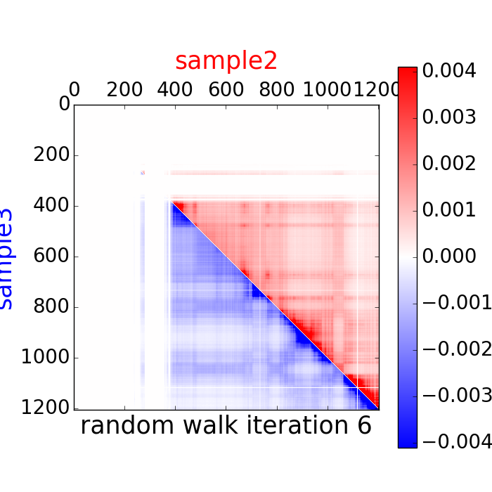 |
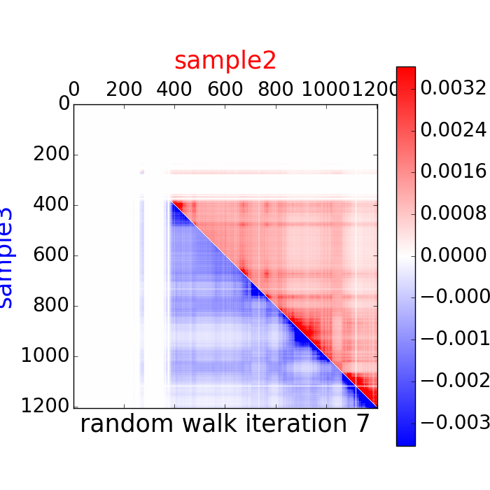 |
| chr22 |
sample2: 1.93 M
sample3: 1.37 M |
0.706 |
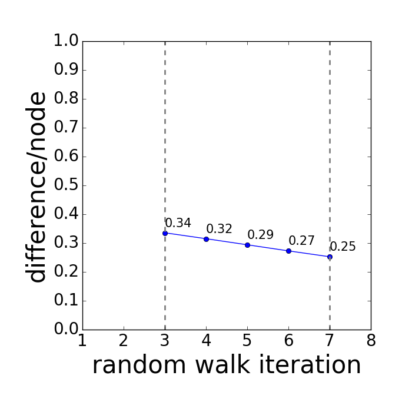 |
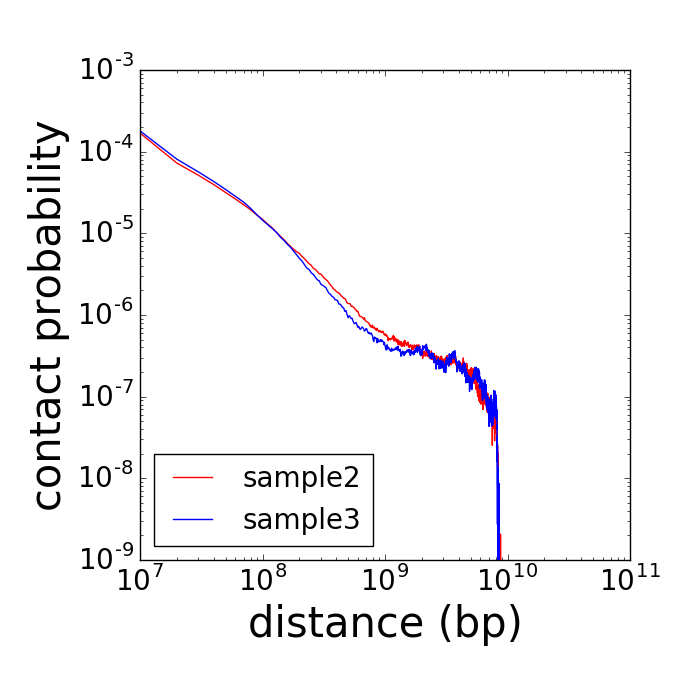 |
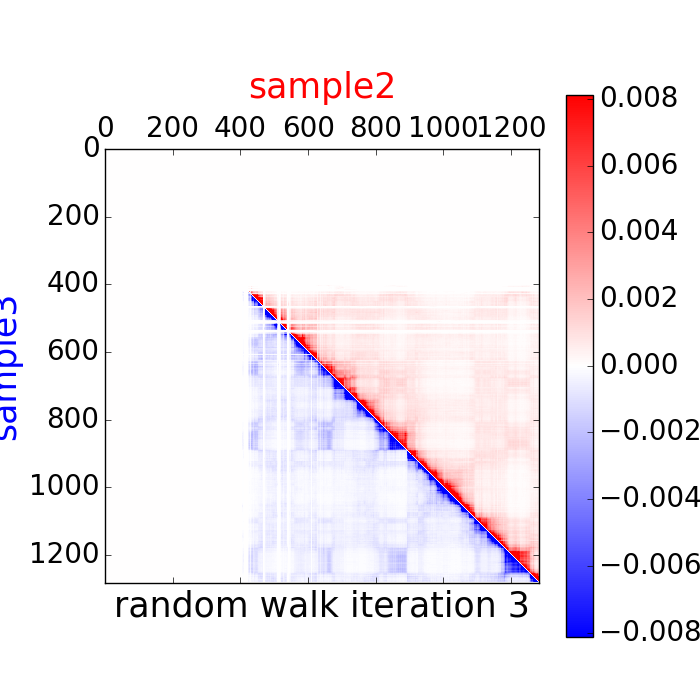 |
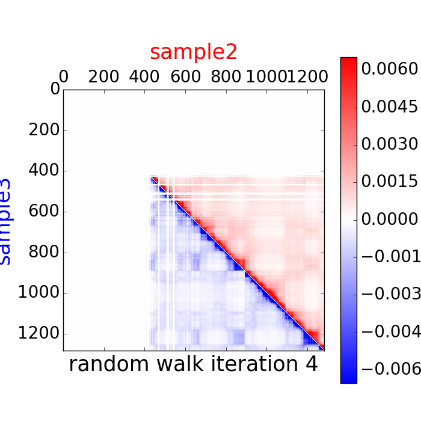 |
 |
 |
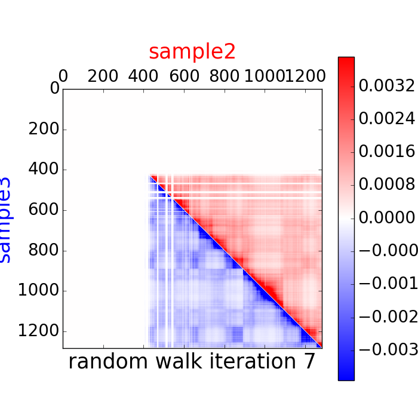 |